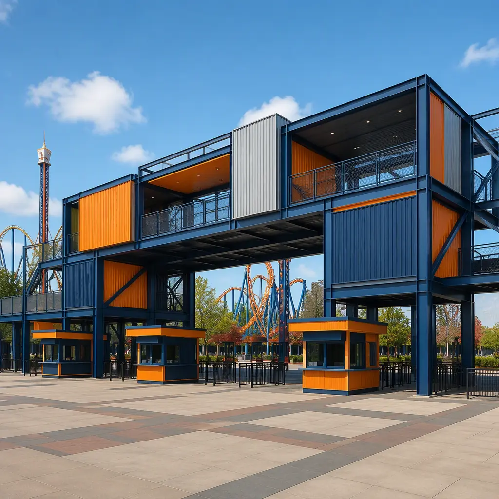
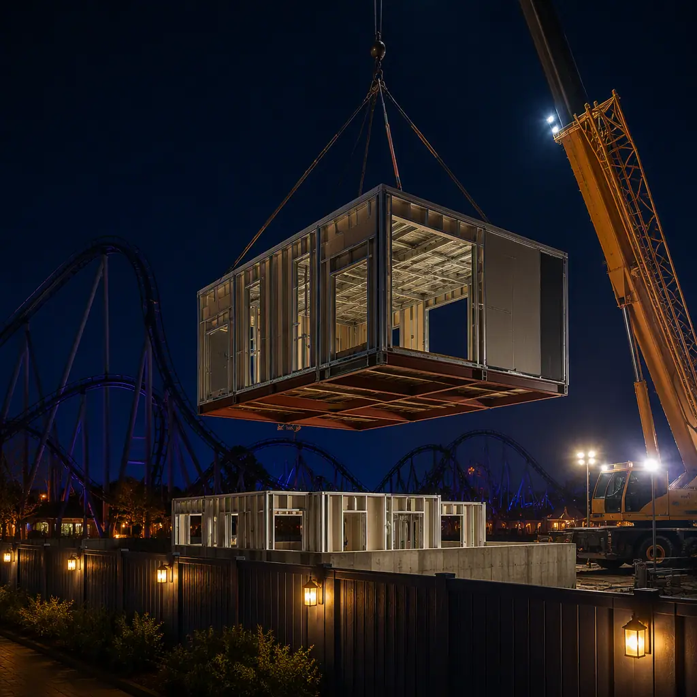
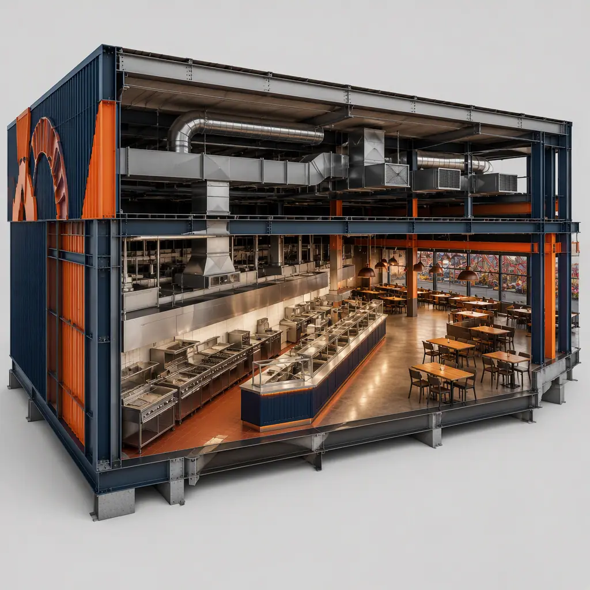
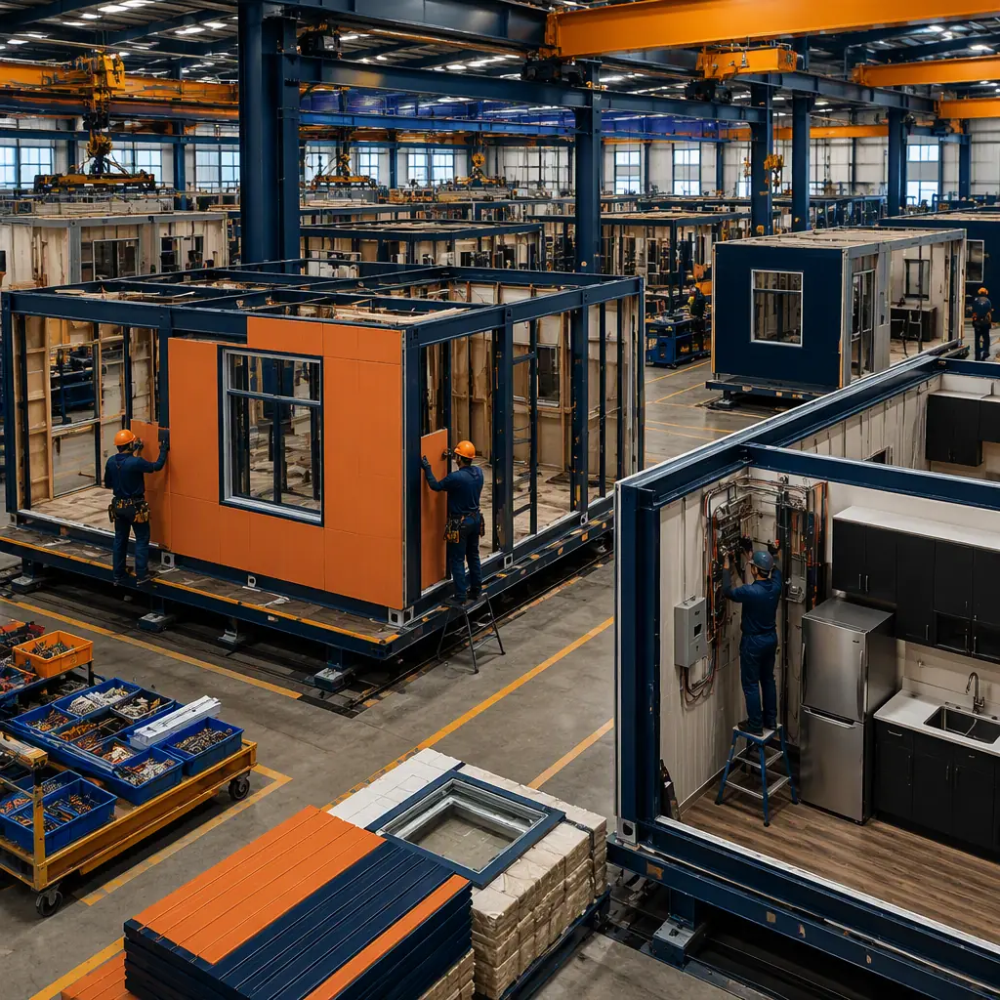

Theme parks operate on a brutal construction constraint: the park is closed to construction for only a few months a year, and every day of that window is needed to keep attractions running, re-theme existing areas, and prepare for the next season. A park cannot close its main gate for a year while a new food court goes up — the revenue loss would exceed the building cost several times over. Modular prefabricated construction fits the seasonal calendar because the building work happens in a factory while the park stays open, and the finished modules arrive at the gate ready to be craned into place during the off-season. An entry plaza building, a 12,000 sq ft food and beverage court, or a 40-stall restroom and guest-services facility can be designed, manufactured, and delivered in 16–24 weeks — timed so installation lands inside the closed season — then commissioned in two to four weeks of night and off-peak work. The same factory-delivery logic we document for modular convention and event centers and modular sports stadiums and arenas applies across the park building program, from the guest-facing entrance to the maintenance shop behind the scenes. This guide covers the theme park building program, entry and guest-experience buildings, dining and retail facilities, ride support and back-of-house buildings, staff and administration facilities, utilities and the ride interface, theming and architectural flexibility, cost structure, and off-season phasing.

What a Theme Park Actually Builds
Most of a theme park's construction budget goes to buildings that guests never think about. Beyond the headline rides, a park is a small city of structures: the entry plaza with ticket booths and turnstile housing, guest services and lost-and-found, food and beverage courts, quick-service restaurants, merchandise and retail buildings, restroom facilities, first-aid stations, ride control and dispatch buildings, maintenance and repair shops, laundry and costume services, storage, staff facilities, and administration. What unifies nearly all of them is that they are repeatable, code-constrained buildings with heavy MEP content — commercial kitchens, high-occupancy restrooms, electrical rooms for ride power — exactly the building types where factory production delivers the largest schedule and quality advantage. The park building program follows the same guest-experience and operations logic we document for modular bowling and family entertainment centers and modular movie theaters and cinemas.
Entry & Guest-Experience Buildings
The entry plaza is a park's first impression and its busiest space — thousands of guests passing through ticket booths, bag check, and turnstiles in a two-hour morning surge. The building program is compact and highly serviced: ticket booth modules with secure cash handling and HVAC, turnstile housing with the access-control network, and a guest-services building with first-aid, lost-and-found, and stroller rental. These structures are small enough to be delivered as single modules and installed in a single night, but their MEP density — data, power, cash-management security, and environmental control for a staffed booth — benefits enormously from factory installation and testing. For parks expanding capacity, modular entry buildings can be added as satellite gates, spreading arrival load across the perimeter — the phased-expansion logic we document in modular additions and expansions.

Dining, Retail & Restroom Facilities
Food and beverage is the second-largest revenue line at most parks, and the buildings that serve it are among the most demanding in the program. A park food court packs commercial kitchens, walk-in coolers, serving lines, and seating for 300–600 guests into one structure, with grease ducts, fire-suppression systems, and exhaust requirements that dominate the design. Factory-built dining modules arrive with kitchens fully fitted — hoods, fire suppression, plumbing and equipment installed and tested — so the park's opening-day menu is served from a kitchen that was commissioned in the factory, not on site. Retail and merchandise buildings follow standard commercial construction but with park-specific finishes and security. Restroom facilities — often the park's highest-occupancy buildings — are delivered as prefabricated modules with vandal-resistant fixtures and high-volume ventilation, the same wet-room engineering we document for prefabricated bathroom pods. The food-service program logic is covered in our modular restaurant construction guide, and the retail program in modular retail construction.
Ride Support, Maintenance & Back-of-House Buildings
Behind the guest areas, parks run a continuous industrial operation: ride control rooms, maintenance shops for vehicles and trains, laundry and costume services, storerooms, staff locker rooms, and administration. These buildings are the least glamorous and the most schedule-tolerant — which makes them the easiest wins for modular delivery. A ride maintenance shop with heavy-duty floors, bay doors, and a parts storeroom can be manufactured while the park operates and set in place in an off-season weekend. Ride control and dispatch buildings house sensitive electrical and control systems that benefit from factory-built, tested enclosures — the same precision-environment discipline we document for modular substations and electrical buildings. For parks replacing outdated back-of-house facilities, modular delivery also enables relocation: an older maintenance building can be replaced in phases without shutting down the operation it supports.

Theming & Architectural Flexibility
The objection most park owners raise to modular construction is theming: a park's buildings are supposed to look like a medieval castle, a spaceport, or a frontier town, not like factory boxes. Modern modular delivery answers this with a two-layer strategy. The structural module — steel frame, MEP, interior finishes — is standardized for cost and speed, while the exterior envelope is a theming layer applied in the factory: themed cladding panels, artificial rockwork, decorative roofs, signage and facade elements attached before shipment. The guest sees the theming; the owner gets the speed. Because the theming layer is attached in a controlled factory environment rather than scaffolded on site, the quality is higher and the on-site work shrinks to module setting and facade tie-in. The same flexibility logic — standardized core, customized envelope — is documented in our modular building design flexibility guide.
Staff & Administration Facilities
A park employs thousands of seasonal workers, and the staff-side building program — employee entrances with security turnstiles, locker rooms, costume and uniform services, break rooms, training classrooms, and administration offices — is a substantial share of the construction budget that rarely makes the marketing brochure. These facilities are also the most forgiving to build off-site: they are standard commercial modules with conventional MEP, delivered on the same off-season schedule as guest buildings. Because staff facilities can be installed and commissioned before guest-facing work begins, they make an ideal first phase — the park can train and process its seasonal workforce in the new buildings while the guest-facing modules arrive. The office and training program follows the standards we document for modular office buildings, and the employee-welfare design — lockers, break areas, and amenities sized for shift peaks — follows the workforce-facility logic of modular workforce housing.
Utilities, Power & the Ride Interface
Parks are power-hungry sites: a major coaster can draw several megawatts at launch, and the ride network, show systems and food service depend on reliable distribution. New park buildings therefore carry significant electrical content — main switchgear rooms, UPS and backup generation for ride safety systems and cash handling, and data rooms for the park's network, ticketing and show-control systems. These spaces are among the highest-value modules in the program: a factory-built electrical room arrives with switchgear, batteries and controls installed and tested, then ties into the site loop with a single connection — the same precision-enclosure engineering we document for modular substations and electrical buildings. Fire suppression is equally critical in a park, where kitchens, ride control rooms and high-occupancy guest buildings demand code-compliant systems; the full compliance framework is covered in our modular construction fire safety guide. For parks expanding a master plan across multiple seasons, the site-wide coordination of power, data and utility corridors is managed on the same digital model we document in modular BIM and digital workflow.
Cost Structure — Modular vs. Conventional Park Buildings
| Park Building Program | Conventional | Modular |
|---|---|---|
| Ticket booth + turnstile housing (6 booths) | $450–700K / 6–9 months | $360–560K / 12–16 weeks |
| Food court with kitchen (12,000 sq ft) | $4.8–7.2M / 12–16 months | $3.9–5.8M / 20–26 weeks |
| Restroom & guest services (40 stalls) | $1.1–1.7M / 8–12 months | $0.9–1.4M / 14–18 weeks |
| Ride maintenance shop (6,000 sq ft) | $2.2–3.3M / 10–14 months | $1.8–2.7M / 16–20 weeks |
The 15–20% capital saving is real, but the decisive number is the schedule: buildings delivered inside one off-season window open for the next season's revenue, not the season after. For the full cost methodology, see our 2026 modular construction cost guide.

Off-Season Phasing & Logistics
The seasonal calendar dictates the entire delivery plan. A typical park sequence runs: design freeze in early spring, factory production through summer and early fall, delivery and installation in the November–February closed season, and commissioning before the March opening. The critical-path discipline for hitting that window — factory slots, module sequencing, and site preparation completed before the modules arrive — is exactly the scheduling methodology we document in modular construction scheduling. Logistics planning covers crane placement inside the park, route permits for module transport, and night work coordinated with ride maintenance crews; the crane and transport engineering follows our modular crane logistics guide and modular transportation logistics guide. For parks adding capacity across multiple seasons, the program is phased naturally — guest-facing buildings one winter, back-of-house the next — with each phase fully operational before the next begins. A two-phase example illustrates the model: a park replaces its staff facilities and maintenance shop in the first closed season, opening the season with better back-of-house operations, then installs a new food court and satellite entry in the second closed season, debuting both for the following summer peak. Each phase pays for itself before the next one starts, and the park never loses an operating day.
Is Modular Right for Your Park?
Modular delivery creates the strongest value for parks building within a fixed seasonal window, replacing or expanding food, retail and restroom facilities without losing a season, adding satellite entry gates or back-of-house capacity during park operation, and multi-park owners who repeat the same building program across locations — the franchise-rollout economics we document in modular franchise and chain rollout construction. For attractions that need temporary capacity — a seasonal pop-up food village or event pavilion — the same modules can be deployed, relocated and stored between seasons, following the approach in our modular temporary and relocatable facilities guide.
Planning a park building program for the next closed season? Request our attraction-venue documentation package — food court and guest-services module specifications, off-season installation schedules and theming case studies. Contact the MODURA engineering team.